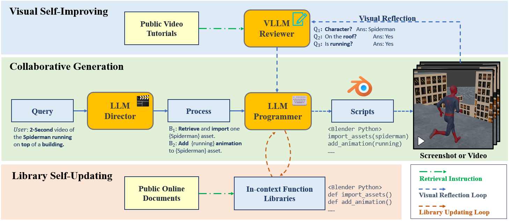

Comparison
Build a Comparison between Kubrick, Pika, Runway, and Luma. Click to Start Comparison!
Demo
Input prompt: Spiderman is running on the rooftop in city night.
Abstract
Text-to-video generation has been dominated by end-to-end diffusion-based or autoregressive models (SORA, etc.). Those novel models provide plausible versatility, but they are criticized for lack of motion and identity consistency, nor the physical-based understanding of the environment. On the other hand, film industry relies on manual Computer-generated Imagery (CGI) based on professional 3D Engine (Blender, etc.). Human-involved 3D physical-based rendering ensure quality and consistency, but it is extremely tedious and requires complex collaborations among movie making and 3D rendering experts. In this paper, we introduce a rendering-based video generation pipeline based on Vision Large Language Model (VLLM) agent collaborations. Given a random text query, multiple VLLM agents which prompted with specific rules and given retrieved expert knowledge take charge of each stage of the pipeline. They cooperate to generate Blender scripts which renders a video that best aligning the given query. Prompted by public tutorials, the Director agent with Blender-based movie making knowledge decomposes input text query into detailed sub-processes. The decomposed sub-processes guide the Programming agent to do Blender scripting based on customized function composing and official API calling. The Reviewer agent with knowledge of video quality reviews intermediate screenshots and key frames with compositional reasoning ability, in order to provide improving feedbacks to the Programmer agent. The Programmer agent improve the The reflection loop works iteratively for the best overall video outcomes. Our generated videos show better quality than commercial video generation models in 5 metrics across video quality and text alignment. Moreover, our framework outperforms on comprehensive user study in quality, consistency, and rationality.
How it works
Given any text prompt, multimodal agents collaborate to produce detailed Blender scripts to generate video with plausible character and motion consistency in any length.

Acknowledgements
Part of the work was done during Liu's internship at Baidu Research USA.
The website template was borrowed from Michaël Gharbi.